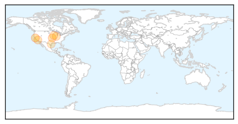
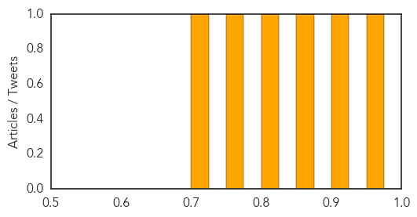
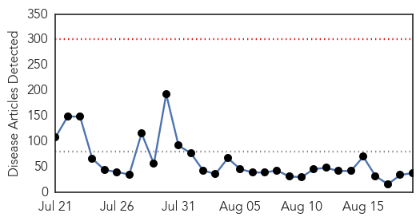

West Nile Virus
30-Day Web Trend
0 alerts, 0 warnings

30-Day Twitter Trend
0 alerts, 0 warnings

Article Locations
Article Confidences
Top Articles:
- 0.971
- UC Berkeley student diagnosed with West Nile Virus
- 0.909
- Briefs: Chase leads to arrest of three Pittsburg runaways
- 0.851
- These Chickens Are Our First Line of Defense Against West Nile Virus
- 0.814
- Local health officials prepping after first case of Human West N
- 0.775
- Climate change may enable bugs, viruses to afflict Iowans
- 0.720
- First Nueces County West Nile case confirmed
Top Tweets:
-
No tweets found for Aug 19, 2014
Unknown
30-Day Web Trend
0 alerts, 0 warnings

30-Day Twitter Trend
6 alerts, 1 warnings

Article Locations

Article Confidences

Top Articles:
- 0.967
- WHO appeals for US$ 14 million to scale up health operations in Ukraine
- 0.966
- First case of Malaria in two years strikes Mobile teenager
- 0.964
- Alabama teen contracts malaria while in Uganda, first case in Mobile County in 2 years
- 0.962
- 254 encephalitis deaths in Bengal this year
- 0.925
- Central Alabama VA vague about legionella testing
- 0.920
- Vietnam reports 40 human rabies deaths this year
- 0.917
- Chicago Tribune
- 0.917
- Chicago Tribune
- 0.917
- Chicago Tribune
- 0.910
- The world windows to Thailand
- 0.880
- Daily Jefferson County Union: News
- 0.866
- Islamic State says another US journalist's fate depends on Obama
- 0.866
- An Israeli soldier reads a book in a staging area near the border with the northern Gaza Strip August 18, 2014
- 0.866
- Putin to hold talks with EU, Ukraine leaders on Aug. 26 in Minsk
- 0.866
- Junior rebel commander detained in east Ukraine
- 0.866
- Iraqi forces fail to recapture Tikrit from militants again
- 0.866
- Iraqi forces mount operation against Islamic State in Tikrit
- 0.866
- Police come under "heavy gunfire" in racial unrest in Ferguson, Missouri
- 0.866
- Police fire tear gas, stun grenades at Missouri protesters
- 0.841
- Three Deaths Reported Among 156 Cases in UK Salmonella Outbreak
- 0.830
- Prospects of Pig Exports to Russia Resuming Vanishing Fast
- 0.816
- New tick-borne disease discovered
- 0.773
- Pig virus costs farmers $800 million a year
- 0.758
- Polio Vaccines May Not Always Work
- 0.733
- U.S. agency: DHHR can’t handle chemical incidents
- 0.711
- STD rates skyrocket in Hillsborough County
- 0.702
- Measles, polio immunization set
- 0.682
- Test alteration simplifies diagnosis of poultry diseases
- 0.638
- Self-Reported Health Information Predicts High-Need Medicaid Patients
- 0.637
- Mangalore, Udupi have most malaria cases in Karnataka
- 0.626
- Tests positive for total coliform again in water-boil area on Flint's west side
- 0.615
- HPV vaccine provides long-lasting protection
- 0.567
- Research team evaluating Lyme disease in province
- 0.540
- The Portland Press Herald / Maine Sunday Telegram
- 0.539
- Alaska Health Officials Suspect Botulism in One Death, Two Illnesses
- 0.525
- Can Twitter Help Better Identify Foodborne Illness Cases?
- 0.514
- Water Boil Mandate in Fair Haven, V.T. After E. Coli Found
- 0.507
- Gaza, Israel and West Bank: No end in sight to overwhelming human cost of conflict - occupied Palestinian territory
Top Tweets:
-
No tweets found for Aug 19, 2014